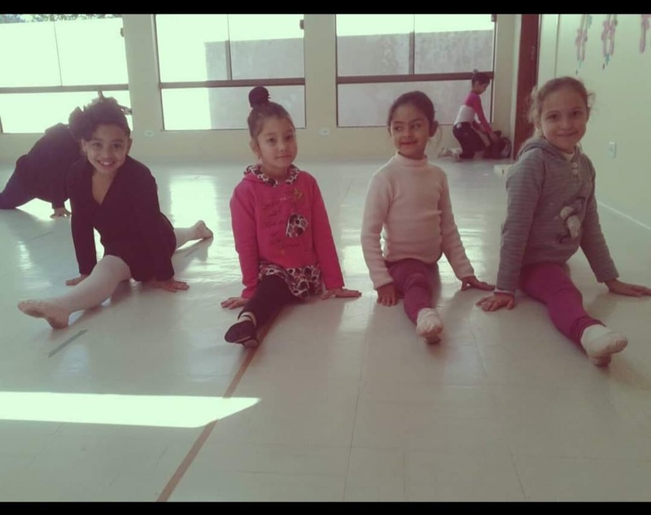
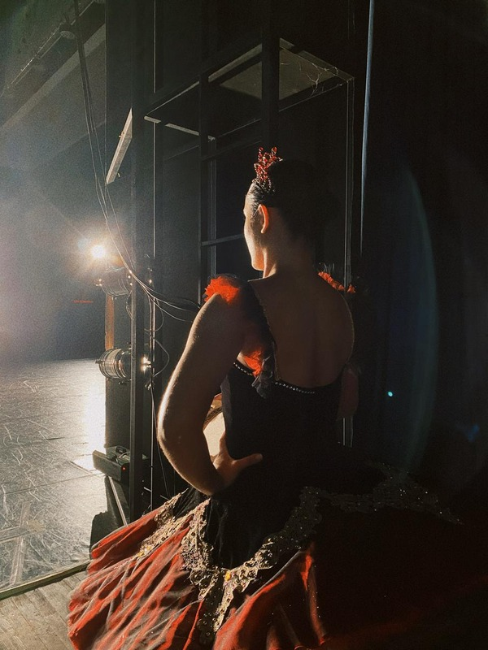
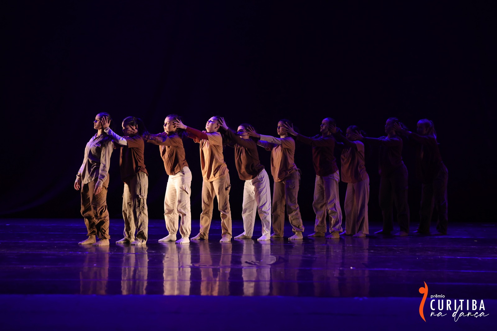
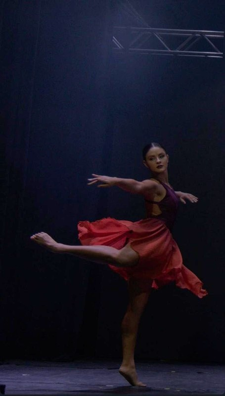

Benefícios do alongamento
O alongamento é essencial para preparar o corpo antes dos ensaios e apresentações. Ele melhora a flexibilidade, reduz o risco de lesões, aumenta a amplitude dos movimentos e contribui para um melhor desempenho na dança.

Como controlar o nervosismo antes de entrar no palco
Uma técnica muito utilizada por bailarinos é respirar profundamente alguns minutos antes da apresentação. Esse hábito ajuda a controlar a ansiedade, melhorar o foco e aumentar a confiança no momento de subir ao palco.

A importância da disciplina na dança
A evolução na dança acontece com dedicação e constância. Manter uma rotina de treinos, respeitar os horários dos ensaios e praticar regularmente faz toda a diferença no desenvolvimento técnico e artístico.

A importância dos ensaios
Os ensaios são fundamentais para desenvolver segurança, técnica e sincronismo. A prática constante permite corrigir detalhes, aperfeiçoar os movimentos e aumentar a confiança antes de uma apresentação.